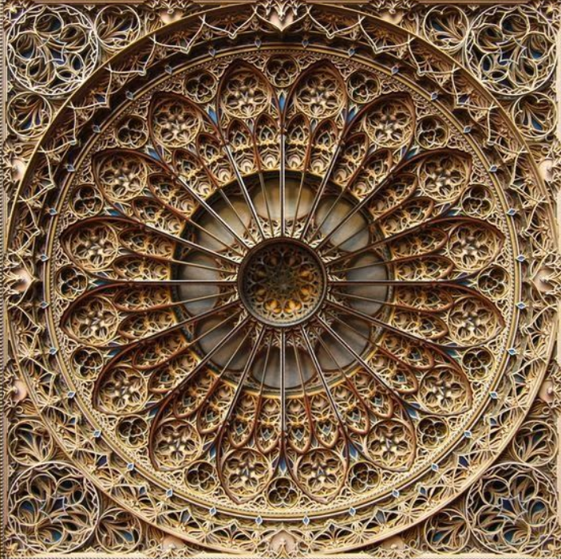
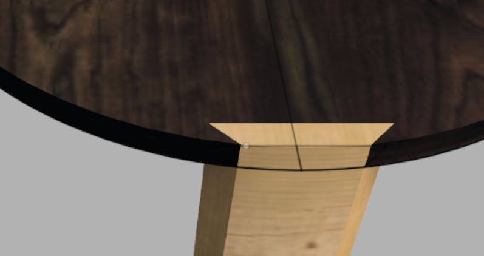
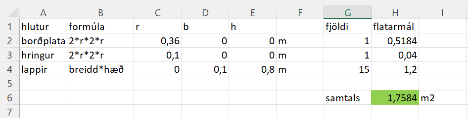

Hönnun
Við hittumst mánudaginn 28. apríl til að ræða og kynna okkur betur ramma lokaverkefnisins. Síðan lögðum við höfuðið bleiti og fengum humynd um að gera einhverskonar vegglist og römbuðum inn á Pinterest og vorum áhugasamir um að fræsa út hæðalínu landlagslista verk og fórum að velta fyrir einhverjum íslenskum fjöllum sem gætu hentað vel í verkið. Eftir stutta stund hættum við landlagspælingar þar sem okkur varð ljóst að krossviðsplatan sem við hefðum úr að ráða væri of þunn og reyndist þessi ákvörðun góð, því seinna meir kom í ljós að efnið væri ekki nóg og fínt í svona nákvæman skurð. Það sem við fundum inná Pinterest voru lista verk sem voru með skipulagi eins og sést hér að neðan þ.e hringur í miðjunni og svo eru form sem mynda lög utan um hringinn.
Síðan þróaðis hugmyndin enn frekar og við ákváðum að hanna borð sem væri með listaverki á borðplötunni. Útfrá eðli listaverksins var fyrirfram ákveðið að borðið yrði kringlótt. Við höfðum í huga að hægt væri að opna borðið og nota þannig innvolsið sem geymslu fyrir teppi eða álíka. Til að framkvæma þurfti að hafa botninn heilann og lappirnar þéttar. Og að lokum hafa borðplötuna tvískipta annarsvegar kringlu sem væri festa fyrir lappirnar og hinsvegar disk sem hægt væri að leggja inn í kringluna sem væri þá hleri fyrir geymslu hólfið. Hér að neðan verður farið í saumana á öllu ferlinu.
Forhönnun
Við byrjuðum á að rissa upp borðið í fusion til að fá tilfinningu fyrir útlitinu sem við vildum ná fram. Eitt sem við lögðum upp með var að í ljósi þess að listaverk kæmi til með að vera ofan á vildum við hafa hring yst á borðinu sem væri auður og sléttur. Það hefði verið hægt að græja á ýmsan máta hinsvegar völdum við að hafa festingu eins og sést á myndinni hér til hliða. Ástæðan fyrir því er að við vildu láta lappirnar flúkta við bogann á hringnum. Einnig lögðumst við í grófa flatarmáls útreikninga til að ganga úr skugga um að allt myndi passa inn á krossviðsplötuna sem í boði var. 
Við stilltum þessu gróflega upp í excel, útkomu þeirra útreikninga má sjá hér til hliðar. Eitt sem vert er að tala um er að fyrst þegar við höfðum sama radíus á botninum og hringnum þá urðum við heldur tæpir á plássi. Til að leysa það ákváðum við að halla löppunum inná við og þar með minnka radíus botnplötunnar það mikið að radíus hennar yrði minni en radíus borðplötunnar með listaverkinu. Þannig væri hægt að hafa botnplötuna innan í hringnum í skurðinum.
Inventor
Við ákváðum að notast við Inventor í verkefninu. Fyrsta skrefið í inventor var að teikna hringinn, borðplötuna og fingurgötin. Eitt fingurgat var teiknað og síðan var það dregið hringinn með hringmynstri þangað til okkur leyst á þéttleika þeirra. Fingurgötin voru extrude-uð eftir hallandi skáplani í 45 gráðum til að ná fram hallanum sem var minnst á hér að ofan. Síðan voru lappirnar extrude-aðar í götin sem new body. Til að leggja loka hönd á lappirnar þá voru þær mjókkaðar eftir því sem neðar dró, annar rækust þær saman þetta var gert með teikningu á framhlið lappana og extruda svo eftir því. Botnplatan var síðan búin til eftir sömu möntru og hringurinn. Þá var útlit borðsins orðin nokkurnvegin eins og sést á myndinni hér að neðan.
.png)
Eina sem vantaði uppá núna var að útbúa tígulmynstrið sem sést á borðplötunni á myndinni hér að ofan. Þetta var gert í þremur skrefum. fyrst var form líkt því sem sést á myndinni hér að neðan teiknað.

Sem var síðan dregið í marga hringi þangað til þétt mynstur myndaðist.

Síðan var ákveðið mynstur af tíglum valið og þeir dregnir í hring mið hringmynstri.


Þá var hönnunin tilbúin og einungis eftirvinnslan eftir en hana má sjá á Franleiðslusíðunni
Hönnunin gekk vel og snuðrulaust fyrir sig enda vel kunnugir Inventor.